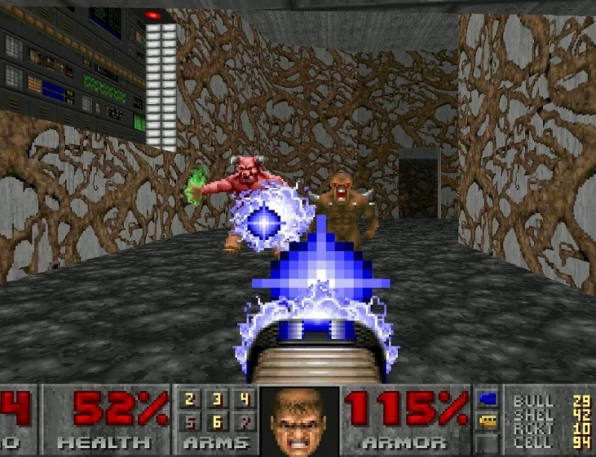

Chapitre Un

DOOM (1993), première entrée de la série des jeux DOOM, utilise le P2P et a révélé ses limites.
DOOM Eternal, dernière entrée de la série des jeux DOOM, n'utilise plus le P2P.
Among Us, un jeu qui utilise encore le P2P, quoique partiellement seulement.
Dragon Ball FighterZ, un jeu qui utilise le protocole UDP, puisqu'il nécessite des inputs rapides et précis.
Chapitre Deux
Immense carte du jeuWorld of Warcraft, comparée à la taille de pays existents. Impossible à charger dans un seul état !
Quake III, jeu dont le moteur est à l'origine de la compression delta.

Super Smash Bros. Ultimate, jeu de combat complexe et très technique, n'utilise pas de filtrage d'état, pour que les deux joueurs aient une vision égale du jeu.
Chapitre Trois
Minecraft, jeu qui utilise un système de ticks, en ligne et hors ligne, afin de calculer le temps passé.
Fornite, jeu qui utilise toutes sortes de prédictions, de techniques de mitigation de latence, etc. pour optimiser l'expérience de jeu. En vérité, c'est un des jeux les plus complets et complexes en termes de networking ! Cela compense son gameplay rébarbatif...